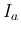
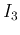
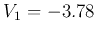
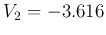

Next: Network Theorems
Up: Chapter 2: Circuit Principles
Previous: Chapter 2: Circuit Principles
Example 1: Find the three unknown currents () and three
unknown voltages (
) in the circuit below:

Note: The direction of a current and the polarity of a voltage source
can be assumed arbitrarily. To determine the actual direction and polarity,
the sign of the values also should be considered. For example, a current
labeled in left-to-right direction with a negative value is actually flowing
right-to-left.
All voltages and currents in the circuit can be found by either of the
following two methods, based on either the KVL or KCL.
- The Loop/Mesh-Current Method based on KVL:
- For each of the independent loops in the circuit, define a
loop current around the loop in clockwise (or counter clockwise)
direction. These loop currents are the unknown variables to
be obtained.
- Apply KVL around each of the loops in the same clockwise
direction to obtain equations. While calculating the voltage
drop across each resistor shared by two loops, both loop currents
(in opposite positions) should be considered.
- Solve the equation system with equations for the unknown
loop currents.

Find currents  from a to b and
from a to b and  from c to b.
from c to b.
- Assume two loop currents  and around loops abda and bcdb
and apply the KVL to them:
We can rewrite these as:
and then get , , and . Having
found and , we can easily find all voltages in the circuit.
- We could also apply KVL around the third loop of abcda to get an
additional equation:
However, this equation is simply the sum of the previous two equations,
i.e., it is not independent. Substituting and from the
first two equations into this equation we get .
- Alternatively, consider the two loop currents and around
loops abda and bcdb:
i.e.,
which can be solved to get and , i.e.,
and  , in consistent with the previous results.
, in consistent with the previous results.
- The Node-Voltage Method based on KCL:
- Assume there are nodes in the circuit. Select one of them as
the ground, the reference point for all voltages of the circuit.
The voltage at each of the remaining nodes is an unknown to be
obtained.
- Apply KCL to each of the nodes to obtain equations.
- Solve the equation system with equations for the
unknown node voltages.
In the same circuit considered previously, there are only 2 nodes  and
(note
and
(note  and
and  are not nodes). We assume node is the ground,
and consider just voltage at node
are not nodes). We assume node is the ground,
and consider just voltage at node  as the only unknown in
the problem. Apply KCL to node , we have
as the only unknown in
the problem. Apply KCL to node , we have
where
Substituting , , and  into the equation, we can get  ,
and all other currents and voltages can be found subsequently.
,
and all other currents and voltages can be found subsequently.
We could also apply KCL to node d, but the resulting equation is exactly
the same as
simply because this node d is not
independent.
As special case of the node-voltage method with only two nodes, we have the
following theorem:
Millman's theorem
If there are multiple parallel branches between two
nodes and , then the voltage  at node can be found as shown
below if the other node is treated as the reference point.
at node can be found as shown
below if the other node is treated as the reference point.
Assume there are three types of branches:
- current branches with (independent of resistors in series).
The direction of each is toward node a.
- resistor branches with .
Applying KCL to node , we have:
Solving for , we get
where the reciprocal of the resistance is called the conductance.

In summary,
- Loop current method: each equation is for one of the independent loops.
- Node voltage method: each equation is for one of the independent nodes.
Example 2: Solve the following circuit:

- Loop current method:
Let the three loop currents in the example above be , and
for loops 1 (top-left bacb), 2 (top-right adca), and 3 (bottom bcdb),
respectively, and applying KVL to the three loops, we get
We can then solve these 3 loop equations to find the 3 loop currents.
- Node voltage method:
Choose node d as ground, and then apply KCL to the remaining 3 nodes to get:
We can then solve these 3 node equations to find the 3 node voltages.
Example 3: Solve the following circuit with , ,
, , , :

Loop current method:
Assume three loop currents (left), (right), (top) all in
clock-wise direction. We have
Solving these equations we get: , . We can also
get the three node voltages with respect to the bottom node as ground:
(right),
(middle), and
(left).
Node voltage method:
Assume the three node voltages with respect to the bottom node as ground
to be  (left),
(left),  (middle), (right). Applying KCL to
the first two nodes, we get
(middle), (right). Applying KCL to
the first two nodes, we get
Solving for and , we get: , , same as before.
Example 4: (Homework) Find all node voltages with respect to the top-left
corner treated as reference node:

, , , , , .
Answer
Note: While using node voltage and loop current methods to solve a given
circuit, to simplify the analysis, it is preferable to
- choose independent loops to avoid current source shared by two loops,
- choose ground node so that the voltage source is connected to ground.
Example 5: The two circuits shown below are equivalent, but you may want to
choose wisely in terms of which is easier to analyze. Solve this circuit using
both node voltage and loop current methods. Assume ,  ,
, , , and .
,
, , , and .


Answer
Next: Network Theorems
Up: Chapter 2: Circuit Principles
Previous: Chapter 2: Circuit Principles
Ruye Wang
2014-09-24